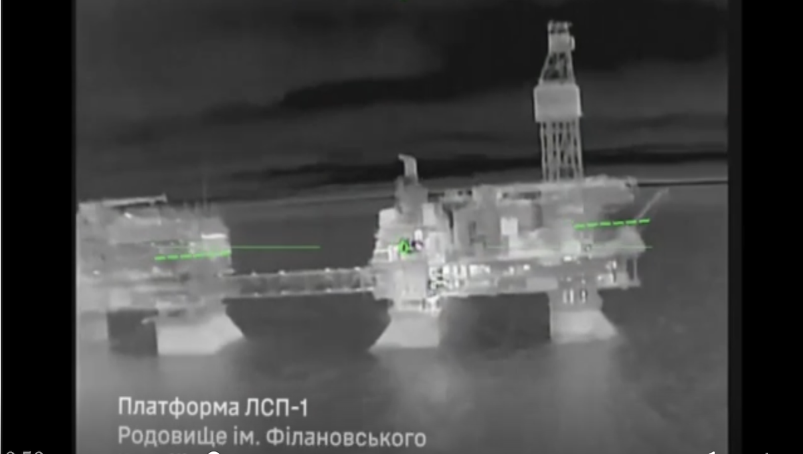
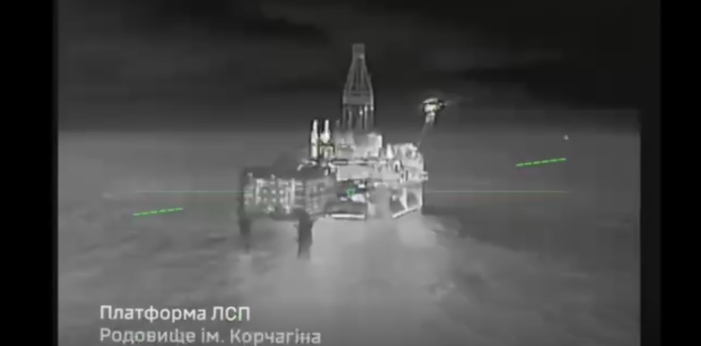

Ukraine hits Russian drilling platforms in Caspian Sea

Ukrainian forces struck three Russian drilling platforms belonging to Lukoil, one of Russia's largest oil producers, in the Caspian Sea, Ukraine's General Staff reported on Jan. 11.
Separately, Ukraine also hit a Russian Buk-M3 anti-aircraft missile system in the occupied parts of Ukraine's Luhansk Oblast and other military assets, according to the statement.
The three Lukoil Corporation drilling platforms hit by Ukraine — the V. Filanovsky, Yuri Korchagin, and Valery Graifer platforms — are used for oil and gas extraction.
"Direct hits have been recorded. The extent of the damage is being assessed," the statement reads.
These platforms supply fuel to the Russian army, according to Ukraine's Special Operations Forces (SSO), which carried out the strikes on the night of Jan. 11. The SSO also published video footage of the alleged attacks.
Oil and gas exports cover a major part of Russia's federal budget and play a significant role in sustaining Moscow's war in Ukraine.

Ukrainian forces also struck a warehouse and technical support unit of Russia's 49th Combined Arms Army in the area of the town of Novotroitske, in the Russian-occupied part of Kherson Oblast. This army group is the main Russian force in the region.
The Kyiv Independent was unable to verify the military's claims.
Ukraine has escalated its campaign against oil facilities inside Russia and Russian-occupied territories throughout 2025, primarily relying on domestically developed drones.
Ukraine's Special Operations Forces (SSO) carried out drone strikes on a Russian patrol ship and an oil platform in the Caspian Sea on Dec. 19. The attack also targeted a Russian oil platform located at the Filanovsky oil and gas field in the Caspian Sea.
Source: kyivindependent.com
The Societal News Team 13JAN2026